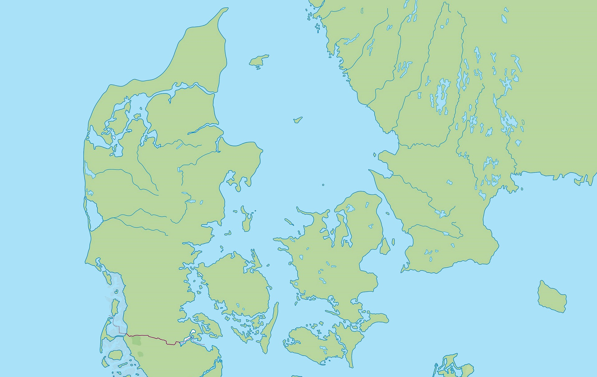

Right under Copenhagen in Køge Bay the earth woke up – and shook all of Zealand

Press the buttons to show or hide the geological lines.
On Wednesday afternoon, 20 May 2026, many Danes were sitting at home or at work. Suddenly the floor began to rumble and shake. Some thought at first it was a big lorry. Others thought it was thunder.
But it was a real earthquake – one of the biggest ever measured in Denmark! Dogs barked, glasses clinked, and a TV even fell off the wall in Nørrebro. Luckily nobody was hurt.
During the last Ice Age a 3 km thick ice sheet lay on top of Scandinavia. It was so heavy that the land was pressed down into the deep layers of the earth — just like when you sit on a soft sofa cushion.
When the ice melted about 10,000 years ago, the land slowly began to rise again. It is still happening today — and it happens unevenly. Across Denmark runs an invisible tilt line from Ringkøbing across Funen to Fakse:
🔼 North of the line the land is rising. Skagen gains most with +1.75 mm/yr. Copenhagen and Aarhus are rising by +0.5 mm/yr.
🔽 South of the line the land is sinking by up to −0.4 mm/yr. That is especially bad for the Wadden Sea, because the land is sinking at the same time as the sea is rising.
Newer GPS measurements have found yet another tilt line, running further south — from Fanø via Sønderborg to Gedser. Stresses from this slow movement can trigger earthquakes.
Right through Denmark runs an old crack in the Earth's crust called the Sorgenfrei-Tornquist Zone. It is several hundred million years old — from the time when the old Nordic bedrock was pushed together with the rest of Europe.
The crack runs from the North Sea through North Jutland, north of Zealand, through Scania and down towards Bornholm. It is a line of weakness where stiff bedrock meets softer layers.
Almost all Danish earthquakes happen in or close to this zone — including the quake of 20 May 2026 in Køge Bay.
We lie in the middle of a large stiff plate — the Eurasian plate. But the plate is being pushed from two sides:
Africa is pressing north towards Europe by just under a centimetre a year. That is why the Alps are still growing.
Iceland lies right on the line where North America and Eurasia are sliding apart. Half of Iceland pushes Europe eastwards.
These pushes build up stresses inside the plate. When the pressure becomes too great at a weak spot — like our old crack — then crack!
Drag the timeline or press Play and see how the land rises after the enormous weight of the Ice Age.
10,000 years ago a 3 km thick ice sheet lay on top of Scandinavia. When the ice melted, the land began to tilt around the tilt line — and it still does.
If you could cut the Earth in half like an apple, you would discover that it has four different layers. Click on the layers to learn more!
The Earth is built up of layers like a giant onion. Click your way through them!
The Earth's hard surface is like a jigsaw puzzle of huge plates that slowly slide around – only a few centimetres a year (about as fast as your nails grow!). When they bump into each other, earthquakes and volcanic eruptions happen.
When two plates pull away from each other, hot magma wells up from below and makes new land. That happens in the middle of the Atlantic Ocean!
When two plates crash into each other, the ground is pushed up and makes mountains. That is how the Himalayas were formed – the world's highest mountain range!
When two plates push past each other, they can suddenly get stuck – and when they let go, there is a BANG! That is how many earthquakes start.
Not all earthquakes are the same! There are actually four different kinds.
The most common of all! It happens when big plates in the Earth's crust press, tear or push against each other. The quake in Copenhagen was a tectonic quake.
When magma moves up through a volcano, the ground can shake. It is often the warning that the volcano will soon erupt!
If a big cave or an old mine shaft collapses far down in the ground, it can cause a small local earthquake.
Big blasts, explosions or atomic bomb tests can also make the ground shake. This is called a man-made earthquake.
A volcano is a place where liquid rock called magma pushes its way up from deep inside the earth. When it spurts out, we call it lava. Press the button – and the volcano will erupt!
Volcanoes come in different shapes – some are flat like plates, others stand pointed like layer cakes!
Flat and wide like a shield. The lava is very thin and runny and flows a long way – not so dangerous, but rather pretty to look at!
The classic "cone volcano"! Pointed and tall with alternating layers of ash and lava. These can explode quite violently!
A small, simple volcano like a heap of sand. It throws out ash and small pieces of rock, but is rarely dangerous. Often lives only a short time!
The biggest and rarest! After a huge eruption the top falls in and makes a big hole – often filled with water like a lake. They are TOTALLY enormous!
Every day the earth shakes more than a thousand times – but most are so small that only fine instruments can measure them.
A quake of 5 is not twice as big as one of 4 – it is 32 times more powerful! The scale counts up very quickly.
Dogs, birds and other animals can often feel an earthquake before people. They hear or sense the first tremors.
Denmark lies in the middle of a plate, so we almost never feel earthquakes. The quake on 20 May was one of the biggest ever here!
Right now there are about 1,500 volcanoes on Earth that can still erupt. And under the sea there are many more!
Lava can be up to 1,200 degrees hot! That is 1,100 degrees more than boiling water.